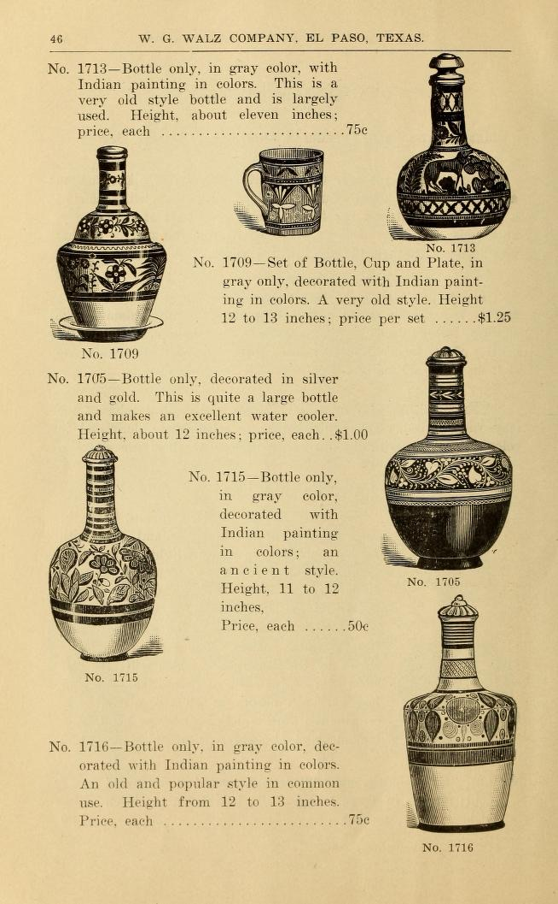
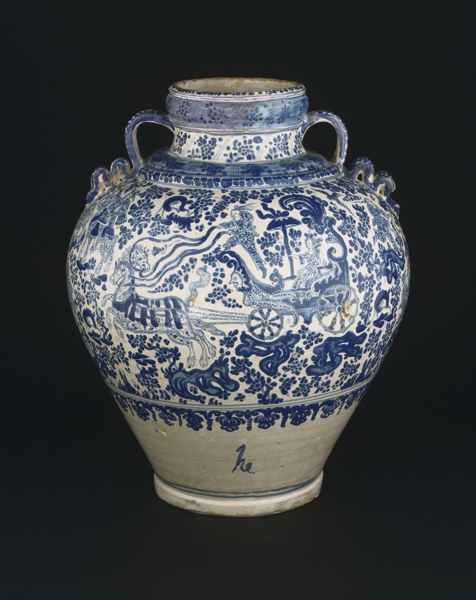
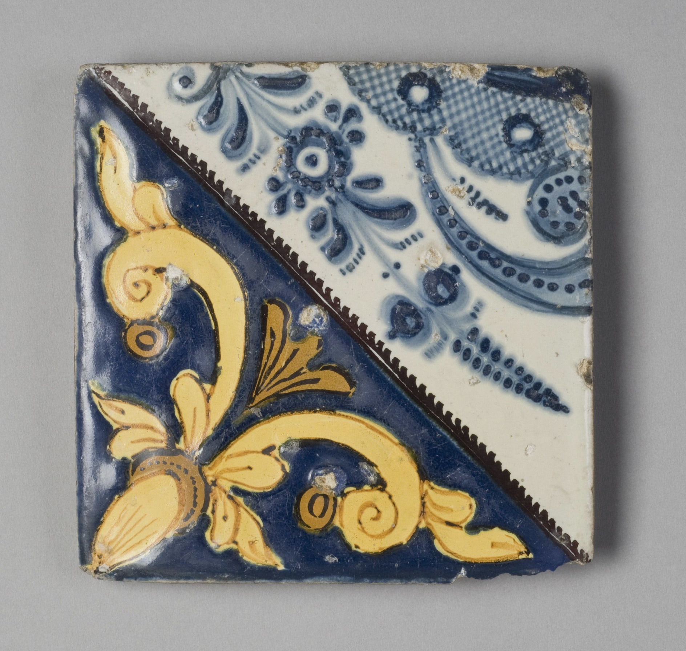
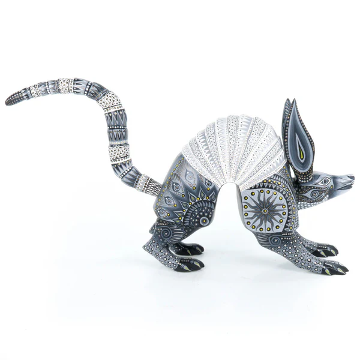
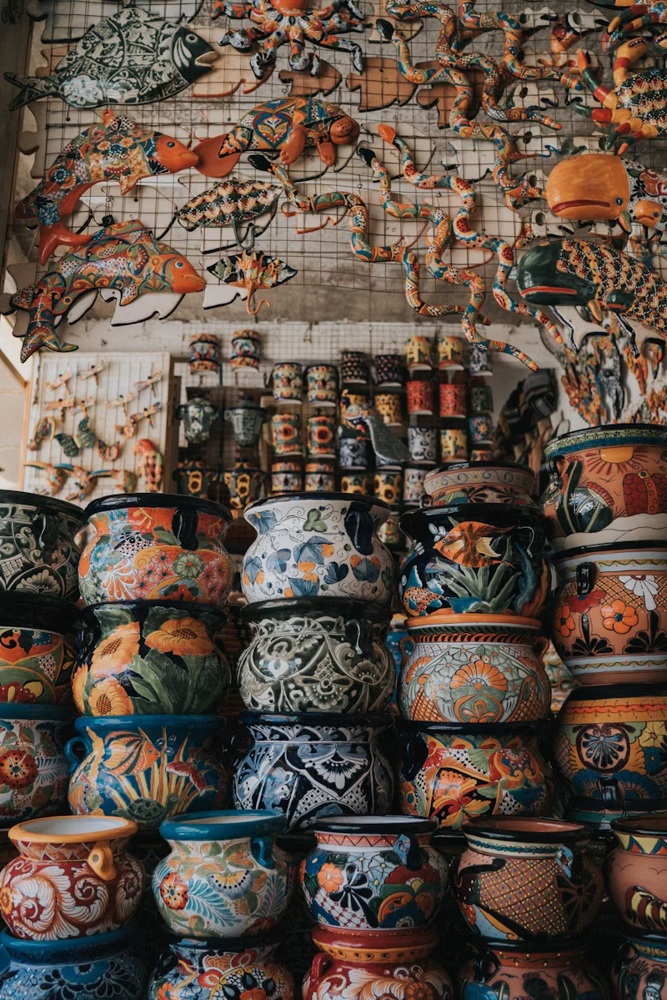

Cerámica

El catálogo de W.G. Walz Company de 1888 presenta una variedad de botellas mexicanas, cada una de las cuales
refleja la herencia cultural de la pintura nativa. Estas piezas ejemplifican la belleza y la elegancia funcional
de la cerámica tradicional mexicana, lo que las convierte en valiosas incorporaciones a cualquier colección.
(Colecciones especiales de la Universidad de Delaware)

La colorida cerámica de barro es otra expresión de la cultura mexicana, famosa por sus diseños y patrones vibrantes.
Este tipo de cerámica incluye platos y elementos decorativos que suelen estar adornados con flores y escenas de la vida cotidiana.
Esta cerámica no sólo se utiliza en los hogares para las comidas diarias y también es importante en ocasiones
festivas y ceremonias culturales.

Los coloridos azulejos mexicanos, conocidos por sus tonos vivos y detalles intrincados, son una forma de arte que muestra el patrimonio
cultural del país. Estos azulejos hechos a mano se fabrican tradicionalmente utilizando técnicas que se remontan al siglo XVI, combinando el arte indígena con las influencias españolas.
Cada azulejo está pintado con diseños que van desde patrones geométricos hasta motivos
florales y escenas de la vida cotidiana. Los colores brillantes se logran mediante pigmentos naturales y un proceso de esmaltado, lo que da como resultado piezas
duraderas e impresionantes. Los azulejos mexicanos se utilizan comúnmente para adornar las paredes, los pisos y los elementos arquitectónicos. Más allá de su atractivo decorativo,
estos azulejos reflejan un profundo aprecio por la artesanía y la tradición, lo que los convierte en un elemento clave del diseño del hogar mexicano.

Las figuras de animales y los alebrijes se encuentran entre las formas más encantadoras de trabajos en arcilla mexicanos, conocidos por sus colores
vivos y diseños imaginativos. Los alebrijes, en particular, son criaturas fantásticas que combinan las características de diferentes animales. Estas figuras caprichosas surgieron de la imaginación del artista Pedro Linares
en la década de 1930 y desde entonces se han convertido en una parte querida del arte popular mexicano. Las figuras de animales, que van desde realistas
hasta abstractas, a menudo tienen significados culturales y simbólicos y representan diversos aspectos de la mitología y la vida cotidiana mexicana.
Cada pieza está meticulosamente hecha a mano, reflejando la creatividad y habilidad del artesano, y sirve como una representación del espíritu
artístico de México.

La cerámica mexicana, que presenta un diseño distintivo de color marrón por dentro y de colores vibrantes por fuera, es un testimonio de las ricas
tradiciones artesanales y el ingenio creativo del país. Estas piezas, a menudo hechas a mano por hábiles artesanos, combinan el encanto rústico y
terroso de la arcilla natural con el arte popular mexicano. Este sorprendente contraste no sólo realza el atractivo visual de la cerámica sino que también
resalta la artesanía involucrada en la creación de cada pieza. Estas ollas y cerámicas son funcionales y decorativas.